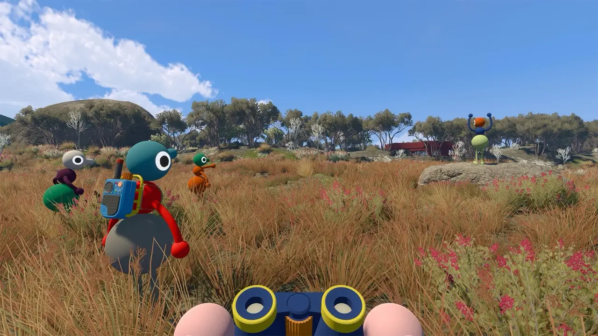
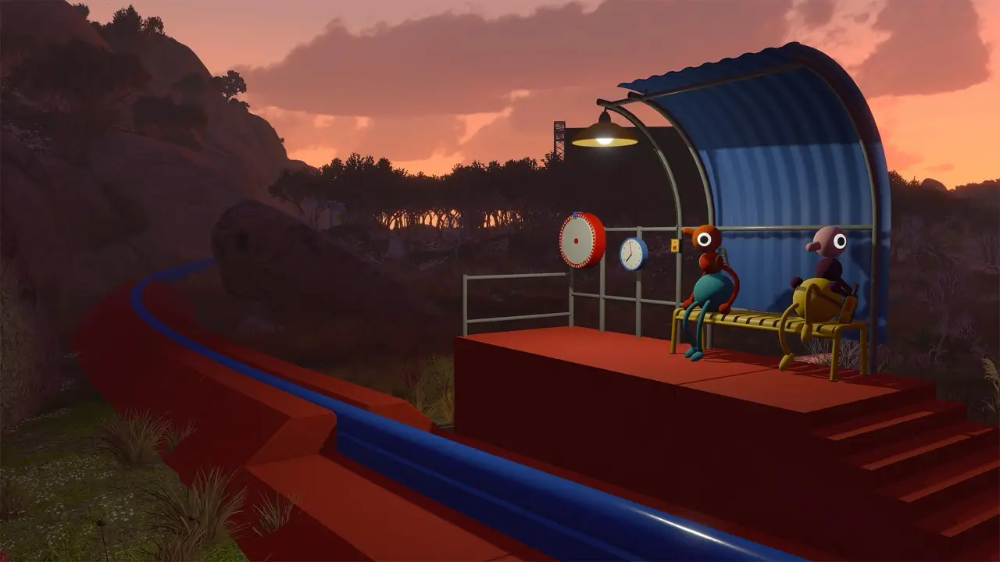
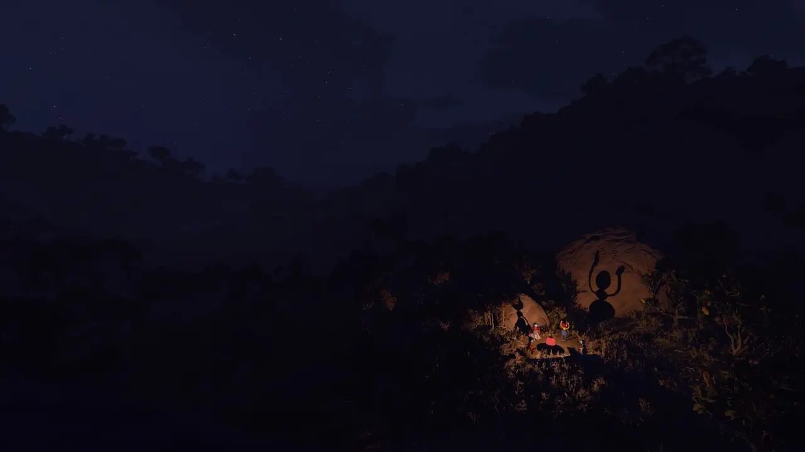

Puzzles
All puzzle routes
Start at the Drawbridge, follow the tower routes, and keep spoilers under control.
View Big Walk puzzles →Walk together. Get wonderfully lost.
Clear answers, spoiler-aware puzzle help, map notes and multiplayer guides for your next strange little expedition.
Popular guides
Built around the questions players are searching for most, with quick answers first and deeper context when you need it.

Start at the Drawbridge, follow the tower routes, and keep spoilers under control.
View Big Walk puzzles →
Use major landmarks, the Train Station and Map Room to keep your group oriented.
Read the map guide →
Crossplay, joining friends, group sizes and the practical details in one place.
Check crossplay support →Start here
Big Walk is designed for 2–12 players. You can explore alone briefly, but progress depends on cooperation.
The host selects a 2-player, 3-player or 4+ configuration. The world adjusts some challenges to match.
Distance, voice and separation are part of the adventure. Stay close, agree on landmarks and share important items.
About Big Walk
Explore an open island with friends, solve unusual challenges and find your way through a world that rewards coordination more than speed.
Get current guidance for Steam, PS5 and Xbox availability questions.
See minimum, maximum and how each lobby setting changes the world.
Read the player-count guide →Next stop
Begin with the Drawbridge route, then use the tower index to keep your group moving without revealing more than you want.
Start the puzzle guide